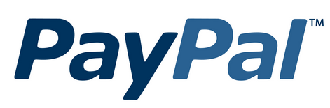

هل أنت في حيرة من أمرك بخصوص أي الخدمات والتطبيقات التي يجب عليك استخدامها للقيام بأعمالك وإدارة شركتك الناشئة على الوجه الأمثل؟ إذن هذا المقال قد كُتب خصيصًا لك؛ حيث سنُقدّم 12 خدمة أساسية، كما راعينا اختيار الخدمات مفتوحة المصدر، أو تلك التي تسمح ميزانيات الشركات الناشئة تحمل نفقاتها.
تطبيق وموقع Trello هما إحدى الأدوات المجانية التي تساعدك على إدارة مشروعك وتنظيم عملك ومهامك – ليست المهام اليومية فحسب، ولكن الخطط المستقبلية كذلك – وذلك من خلال لوحات تمثل المشروعات، بداخلها توجد أقسام متعددة، وبداخل الأقسام تُضاف المهام كي يسهُل عليك متابعتها. بإمكانك أيضًا إبقاء إحدى المشروعات سرية وخاصة بك، أوإضافة أعضاء فريقك للعمل معك؛ حيث تخصص لكل شخص مهمة محددة بوقت، وبذلك يُصبح عملك بالكامل مرتّبًا ومنظّمًا.
خدمات أخرى بديلة:

لا يتميز موقع NameCheap بتوفيره لكافة الامتدادات فحسب، أو بتقديمه أسعارًا زهيدة لأسماء النطاقات مقارنة بالمواقع الأخرى فحسب، وإنما يتميز أيضًا بلوحة تحكم بسيطة وغير معقدة، كذلك يقدم خدمة "WhoisGuard Privacy Protection" مجانًا لمدة عام كامل ويوفّر دعمًا فنيًّا سريعًا ومميزًا. ويبدأ سعر اسم النطاق في موقع NameCheap من 10 دولارات للامتداد ".com"، وفي حالة حجزك اسم النطاق لأول مرة، فلن يتعدى سعره 4 دولارات لمدة عام. ويوفر الموقع العديد من طرق الدفع المختلفة مثل PayPal وبطاقات VESA وMasterCard، وغيرها من طرق الدفع المتنوعة.
خدمات أخرى بديلة:
إنها الاستضافة السحابية الأسرع والأنسب لإدارة موقعك من خلال لوحة تحكم بسيطة ومرتبة، وذات خوادم سريعة الإقلاع؛ فلن يستغرق إعداد الموقع سوى 55 ثانية فقط ليكون بعدها مُتاحًا على الإنترنت، كما تتميز كافة خطط الاستضافة التي تبدأ أسعارها من 5 دولارات شهريًّا بمعدل نقل بيانات (bandwidth) يبدأ من 1 تيرابايت/الشهر بسرعة 1 جيجابت/ثانية يمكن زيادته، كذلك تحتوي كافة الخوادم على أداة KVM لتحسين أداء الخادم، وتوفير الحماية القصوى له.
وبخصوص الأجزاء المادية التي تتكون منها خوادم استضافة Digital Ocean، فإنها تتكون من معالجات سريعة من النوع Hex Core، وذاكرات تخزين من النوع EEC RAM، بالإضافة إلى RAID SSD Hard Storage التي تحسن من أداء وسرعة الموقع.
خدمات أخرى بديلة:

تقدم Google 15 غيغابايت مجانية في خدمتها Drive للتخزين السحابي، ويمكنك تخزين كل أنواع الملفات على Drive لتصبح متوفرة دائمًا، ويمكنك الوصول إليها من أي هاتف ذكي أو جهاز لوحي أو كمبيوتر، في أي وقت تريد، ومن أي مكان. كما يمكنك مشاركة هذه الملفات مع فريق العمل من أجل التعاون المشترك لإنجاز المهام بالتزامن.
وتتميز خدمة Google Drive بتكاملها التام مع كافة خدمات Google، ويمكنك ترقية المساحة الخاصة بك إلى 100 غيغابايت مقابل 1.99 دولار شهريًّا، أو إلى 1 تيرابايت مقابل 9.99 دولار شهريًّا.
في حال أردت استخدام Google Drive for Work؛ فإن Google تقدم لك مساحة غير محدودة مقابل 10 دولارات شهريًّا لكل مستخدم.
خدمات أخرى بديلة:
يعتمد ما يقرب من 23% من مواقع الإنترنت على WordPress، كونه مفتوح المصدر ويقوم بتطويره آلاف المطورين والمبرمجين المحترفين من كل دول العالم. كما يمكن تطويعه ليعمل بالشكل الأمثل الذي تريده؛ فلا يوجد فرق بين استخدامه كمدونة أو كمتجر الكتروني لأنه ملائم للجميع ولكافة الأفكار. ويقدم موقع WordPress قاعدة بيانات ضخمة تحتوي على آلاف القوالب والاضافات المجانية التي تساعدك في عمل أي شيء تريده.
أنظمة إدارة محتوى بديلة:

OpenCart هو برنامج مفتوح المصدر لإنشاء متجر إلكتروني متكامل؛ حيث يمكنك من إضافة عدد غير محدود من الأقسام والمنتجات والمصانع والعملات واللغات والتقييمات. كما يتوفر مع البرنامج أكثر من 20 طريقة لقبول الدفع من العملاء.
وOpenCart مناسب لمحركات البحث، ومدمجة معه لوحة تحكم بسيطة تعطيك نتائج وتحليلات شاملة حول كل كبيرة وصغيرة بموقعك.
متاجر إلكترونية بديلة:
خدمة التحليلات المقدمة من Google هي الأشهر من بين مثيلاتها المجانية؛ فهي توضح لك كل شيء بخصوص زوار موقعك من المكان الذي أتى منه الزائر لموقعك، وحتى يخرج من الموقع. ولا تقف Google Analytics عند تحديد أي الصفحات قد شوهدت، ولكن تعطيك معلومات مفصلة عن نوعية الزائر؛ حيث توضح لك إحصائية بالزوار الفريدين الذين دخلوا الموقع للمرة الأولى، والزوار العائدين للموقع.
كذلك توضح Google Analytics نوعية جهاز المستخدم، نظام التشغيل، نوع المتصفح، وتقدم لك إحصائيات متكاملة عن عدد الزيارات والزوار خلال مدة زمنية محددة.
خدمات أخرى بديلة:

إذا كنت تدير موقعًا لبيع إحدى المنتجات، أو تقدم خدمة ما، فحتمًا ستحتاج إلى خدمة LiveChat للدردشة الفورية مع العملاء بشكل مفتوح ومباشر. إذ تتميز هذه بعدد من المميزات، منها:
خدمة LiveChat ليست مجانية؛ فهي بمقابل 39 دولارًا شهريًّا للمواقع متوسطة الحجم، و59 دولارًا شهريًّا للشركات الكبيرة ذات التعاملات الكبيرة والكثيرة؛ لأنها توفر خدمات أكثر.
خدمات أخرى بديلة:

لأصحاب المواقع الناشئة الصغيرة الذين يريدون خدمة للدعم الفني تكون بسيطة دون الدردشة المباشرة مع العملاء، نقدم لهم Osticket المفتوح المصدر؛ حيث يمكنك عمل نموذج مخصص وإضافة كافة الحقول التي تريدها إلى هذا النموذج، كما يمكنك إضافة أقسام بعدد غير محدود كقسم الدعم الفني، وقسم المبيعات.
ويتمتع Osticket بخصائص متنوعة مثل خاصية إعادة توجيه الرسائل؛ وذلك في حالة أن العميل اختار القسم الخطأ. ويَمنع المستخدم من إضافة نفس التعليق مرتين في نفس الوقت، كذلك فهو مزود بالردود الآليّة لإعلام العميل بأن شركتك قد استلمت رسالته. ويمكن للعميل الاستفسار عما حدث بشأن شكواه من خلال لوحة تحكم مخصصة لهذا الغرض.
خدمات بديلة:
أنت بحاجة إلى نظام محكم لإدارة الشبكات الاجتماعية، فبدلاً من تخصيص وقت معين لموقع فيس بوك، ووقت آخر لموقع تويتر، أصبح كل ما عليك فعله هو تخصيص وقت محدد لموقع HootSuite؛ وذلك لإدارة كافة الشبكات الاجتماعية من مكان واحد فقط باحترافية تامة؛ حيث بإمكانك جدولة المنشورات لكافة الشبكات التي تتعامل معها، ومتابعة التقارير والإحصائيات الخاصة بكل شبكة اجتماعية من مكان واحد.
يمنحك HootSuite حسابًا مجانيًّا لاستخدامه مع ثلاثة شبكات اجتماعية مختلفة، أما إن أردت أن تتمتع بكافة الخصائص فهناك حساب مدفوع بقيمة 8.99 دولار شهريًّا.
خدمات أخرى بديلة:
موقع MailChimp هو أحد المواقع التي تتيح لك إنشاء قوائم بريدية والتي تعد من أهم الخدمات التي يحتاج إليها أي موقع سواء كان جديدًا أو قديمًا؛ فهي تحفظ الزوار وتحثهم على الرجوع إلى الموقع مرة أخرى. ويقدم لك موقع MailChimp معلومات مفصلة عن المشتركين بقائمتك البريدية، كما يمكنك إرسال رسائل تلقائية مجدولة مسبقاً لمن تريد من المشتركين حسب صفات معينة فيهم، مثل أعمارهم وجنسهم وبلادهم في الوقت الذي تحدده.
خدمات أخرى بديلة:

حتما أنت بحاجة إلى خدمة من خلالها تستقبل الدفع من عملائك، وتريد وسيلة آمنة لا يمكن للمخترقين أن يتخطوها، لذلك نحن نقترح عليك موقع PayPal الشهير؛ فهو يقدم خدمات الدفع الإلكتروني الاحترافية والتي تجعله خدمة الدفع الإلكتروني الأولى على مستوى العالم.
يوفر لك PayPal –بجانب الحماية القوية– كافة الأدوات التي تحتاج إليها لتمكين الدفع في موقعك، بالإضافة إلى كونه اسم موثوقًا به من قبل ملايين العملاء.
بدائل PayPal:
احصل على بريد إلكتروني احترافي بامتداد اسم النطاق الخاص بك لنشاطك التجاري عبر الإنترنت باستخدام Google Apps for Work التي توفر أدوات مخصصة للأنشطة التجارية تتيح لك تنفيذ المزيد من المهام، بتصميم مناسب تمامًا لفرق العمل. ويوفر لك Google Apps بريدًا إلكترونيًّا احترافيًّا بسعة 30 جيجابايت وفي زيادة مستمرة، وبدون إعلانات، وبحماية شديدة من الرسائل المزعجة، بسعر 5 دولارات في الشهر أو 50 دولارًا في السنة لكل مستخدم. أو يمكنك الحصول على سعة تخزينية غير محدودة وبإمكانيات أكثر مقابل 10 دولارات في الشهر.
Google Apps متكامل مع باقي خدمات Google ومنها Drive التي تطرقنا لها بالأعلى، ويمكنك متابعة البريد الإلكتروني الخاص بك من أي مكان باستخدام الهاتف الذكي، أو الجهاز اللوحي أو جهاز الكمبيوتر. كما يقدم Google Apps إمكانية إجراء محادثات فيديو جماعية.
خدمات أخرى بديلة:
إلى هنا نكون قد قدمنا إليكم 12 تطبيقًا وخدمة هامة جدًا وأساسية لكل من يود أن يبدأ شركته الجديدة أو موقعه الجديد عبر الإنترنت.